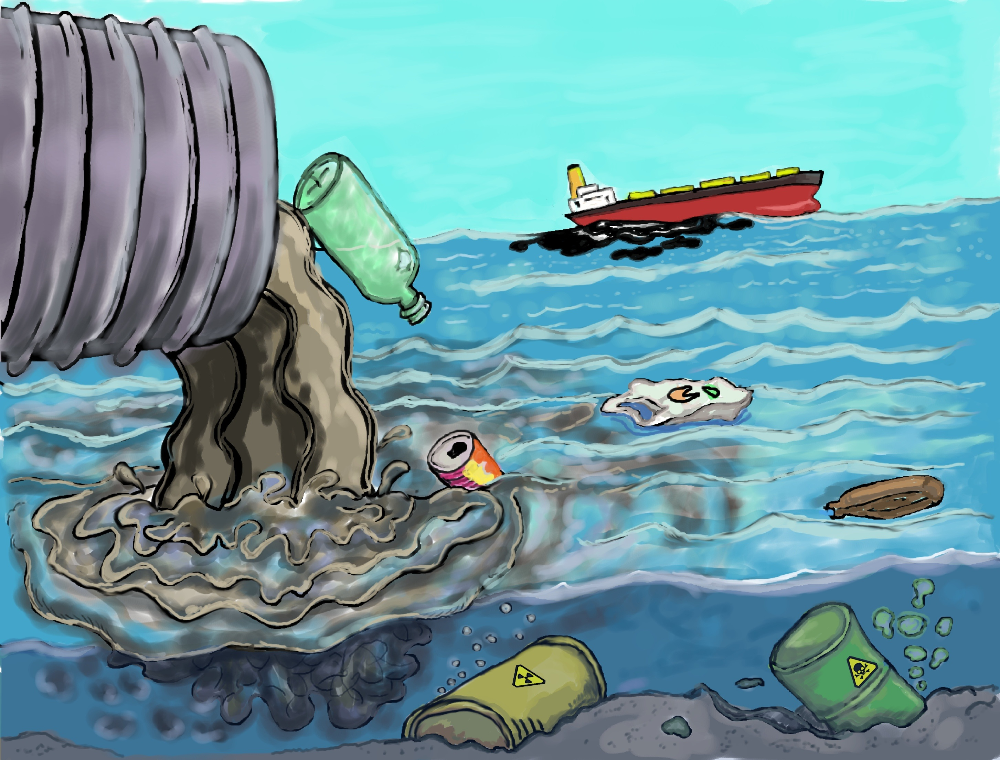

Water pollution is a serious problem that makes water dirty and unable to use. Water pollution is caused by debris in the ocean which pollute the ocean water and even harm marine animals.
 article on water pollutionhere are ways to reduce water pollution